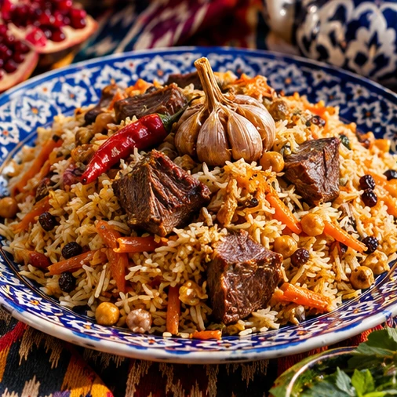
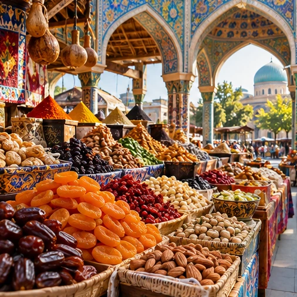
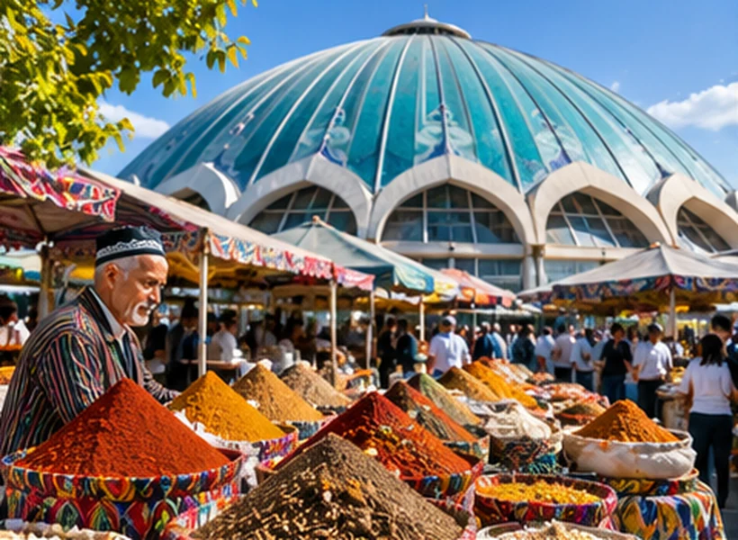

Ташкент.
На вкус.
За ароматом самсы — на Чорсу. За пловом — к огромным казанам. За впечатлениями — в город, где за столом всегда найдётся место для гостя.
THE
CITY ✳
и бесконечно много вкусов


С ЛЮБОВЬЮ✿
OLD TOWN · 2026
Сначала
попробуй.
Потом влюбись.
Здесь история живёт не только в музеях. Она в лепёшке из тандыра, в шуме базара, в пиале горячего чая и в рецептах, которые передают из поколения в поколение.
Мы придумали шесть самостоятельных гастропрогулок: с настоящими городскими точками, понятным маршрутом и маленькими открытиями на каждом шагу.
Какой Ташкент
твой сегодня?
У каждого маршрута свой характер. Выбирай по настроению, времени или любимому блюду.
Это авторские идеи самостоятельных прогулок, а не коммерческие экскурсии. Время примерное; расходы на еду и проезд не включены.
Готовые маршруты
без лишних хлопот.
Три продуманных сценария на 3, 4 или 5 дней. По часам расписано, куда идти, что посмотреть и попробовать. Внизу — честная смета на компанию и готовый PDF с навигацией.
Три вкуса Ташкента
Самое важное без спешкиСтарый город, большой плов и культурные открытия.

Сердце старого Ташкента
История, тандыр и рынок Чорсу
Самса, нон и базар
Ориентиры расходов сопоставлены с обзорами цен за 2026 год: TourEast и Oxus Road. Программа построена вокруг существующих мест и предполагает самостоятельное посещение; фактические транспортные тарифы и входные билеты могут отличаться. Ссылки Google Карт открываются отдельно для каждого дня.
«В Узбекистане знакомство
начинается с чашки чая.»
ГОСТЬ — ДОРОГ
Ташкент больше не картинка.
Он движется. Ты внутри.
Смотри видео, вращай реальную панораму Ташкента на 360° и поставь цифровую пиалу на стол через камеру телефона. Это три разных способа почувствовать город.
ПОЧУВСТВУЙ
РИТМ ТАШКЕНТА.
Не просто листай страницу — погружайся в движения, свет и звуки восточного города.
Фон — художественный видеомонтаж; отдельная кнопка открывает документальную съёмку узбекского базара.Нажимай на каждую карточку — это рабочие интерактивные режимы.
Собери поездку
под себя.
Выбирай места прямо рядом с картой: одно нажатие добавляет остановку в нужный день. Открой советы о месте, поменяй порядок и проложи путь.
От первого «попробую»
до собственного маршрута.
Готовые планы на 1–5 дней, 17 реальных мест и возможность составить свою программу без регистрации.
Куда отправимся?
Нажми «+», чтобы добавить место в выбранный день. По фотографии или названию открывается подробный гид.
Главные герои
нашей истории.
Начни с классики, а затем открой большую гастроэнциклопедию — 19 блюд, напитков и лакомств.
Дастархан
в движении.
Наш интерактивный узбекский стол. Выбирай блюда вокруг традиционного орнамента, узнавай истории и собирай вкусы путешествия.
TASHKENTДАСТАРХАН
Интерактивная авторская композиция по мотивам узбекского дастархана и орнаментов сузани.
Свой маленький
кусочек Ташкента.
Сделай персональный цифровой сувенир: выбери стиль, добавь подпись, отметь любимые вкусы и скачай открытку в PNG.
Отметь, что уже попробовал. Достижения появятся на твоём сувенире.
Попробуй город.
Запомни момент.
Тёплый хлеб прямо из печи. Гул старого рынка. Звон пиал. Иногда лучший сувенир — это история, которую ты увезёшь с собой.
Найти мой маршрутКакой у тебя
вкус к жизни?
Три быстрых вопроса — и мы подскажем гастромаршрут по настроению. Никаких регистраций, только аппетит.
Ну что,
поедим?
Каждый большой маршрут начинается с одного маленького «попробую».
Выбрать приключение